Dynamic Behavior and Stability of Closed-Loop Control Systems
공정과 피드백 제어기+계측기의 조합을 Closed-Loop Control Systems라고 한다.
전달 함수는 폐루프 시스템에 대한 유용한 설명을 제공힌다. 그런 다음 블록 다이어그램을 사용하여 여러 간단한 폐루프 시스템의 동적 거동을 분석할 것이다.
가끔 피드백 제어기를 구현한 이후에 더 불안정해지는 경우가 있다. 불안정한 거동의 원인을 이해하고 이를 방지하는 방법을 이해하는 것은 중요한 문제다. 이 장에서는 몇 가지 수학적 안정성 기준을 소개하고 폐루프 안정성을 분석하는 실제적인 방법을 고찰한다.
1, 블록 다이어그램 표현법
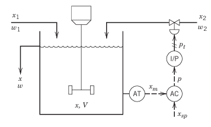
일단 우리가 조작할 수 있는 변수는 x2이고 외란은 x1이다. 이때 우리는 xm을 측정해서 x sp랑 비교한 다음 콘트롤러에서 오차값을 내고 이에 해당하는 신호 p를 도출한다. 이는 컨버터에서 4 to 20mA 가 3 to 15 psig로 변환되어 밸브로 입력된다.
, 피드백 제어 루프의 다섯 가지 요소 각각에 대한 전달 함수를 개발해보자. 이때 다섯가지 요소란 공정,AT,AC,I/P,밸브를 의미한다.
1.공정
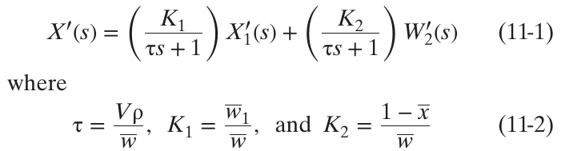 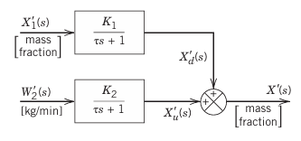
2.센서
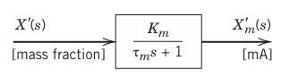
보통 1차계로 근사하거나, 시간상수가 너무 작아(측정이 너무 빨라) Km이라고 두기도 한다.
3. 제어기
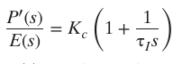
비례+적분제어기 쓴다고 치면 이렇다. 오차가 들어왔을 때, 해당하는 P값을 나타내는 전달함수이다. 이때 p′and e는 각각 units of mA를 가진다. 이때 중요한 건 e가 뭐냐는 것이다.
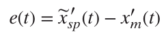 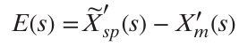
이때 ̃x′ sp(t)는 셋포인트인데, 위에 왜 ~ 표시가 있을까? 내가 설정하는 셋포인트 xsp는 농도이다. 그런데 이 농도값은 전류로 변환이 되어서 x~ 형태로 들어가게 된다. 이후 측정되어 전류신호로 바뀐 xm과 비교가 되는 것이다.
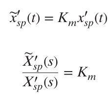
내가 설정해준 셋포인트는 Km이 곱해져서 전류로 변환된다.
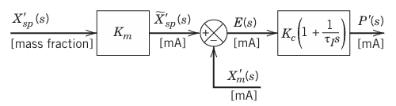
4. Current-to-Pressure(I/P)Transducer
실제 전기 신호(4–20 mA) 를 공압 신호(3–15 psig) 로 바꿔주는 장치이다 .간단하게 보정항 곱해주면 되니
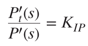
이런식으로 나올 것이다. Pt가 실제 압력으로 나오는 신호다.
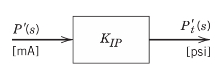
5 Control Valve
제어 밸브는 일반적으로 밸브를 통과하는 유량이 밸브 액추에이터로 전달되는 신호의 거의 선형 함수가 되도록 설계된다. 하지만 압력을 갑자기 바꾸면 밸브는 즉시 열리거나 닫히지 않는다. 기계적 관성, 마찰, 공압 챔버의 압축성 등 때문에 약간의 지연(lag) 이 생긴다. 따라서 1차 전달 함수는 일반적으로 공칭 정상 상태 근처에서 설치된 밸브의 작동에 대한 적절한 모델을 제공한다.
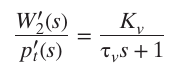 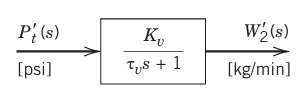
이제 다 합치면 이렇다.
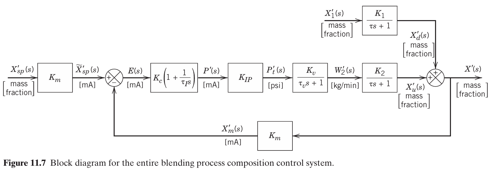
11.2 폐루프 전달 함수
지금까지 고려된 블록 다이어그램은 교반 탱크 블렌딩 시스템을 위해 특별히 개발되었다. 그림 11.8의 보다 일반적인 블록 다이어그램에는 다음과 같은 표준 표기법이 포함되어있다.
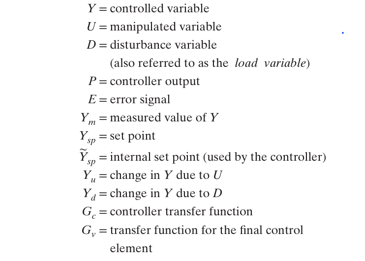 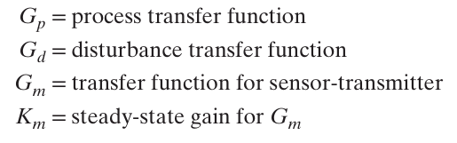 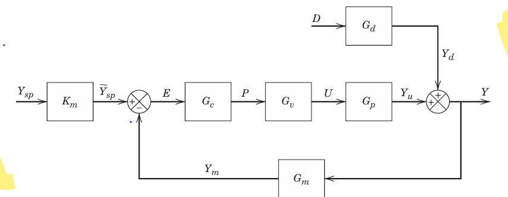
이제 두 가지 문제를 살펴보자.
설정점 변경
설정점 변화에 대한 폐루프 시스템 거동은 서보 메커니즘 (servomechanism)이라고도 한다. 이때는 외란이 발생하지 않는다고 가정한다. 이 경우 Y는 다음과 같이 정해진다.
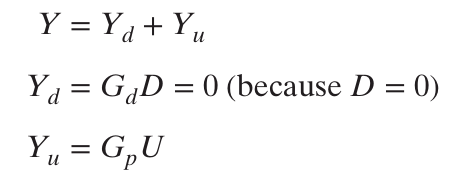
Y=Yu고 U는 또 다시 GvP이다. 이런식으로 분해해나가면서 Ysp의 입력으로 Y를 표현해보자.
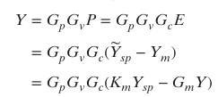 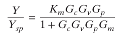
교란 변화
이제 교란 변화의 경우를 고려해 보겠다.
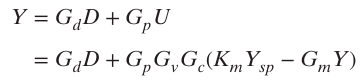 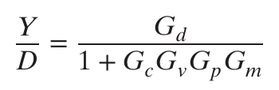 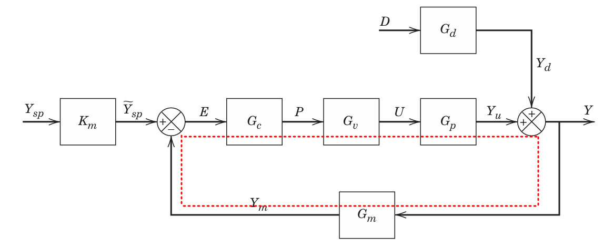
합하면 이렇게 된다. 각 변수들 Ysp와 D에 대한 Y의 전달함수는 다음과 같은 규칙으로 얻음을 알 수 있다.
1)결과값에 도달하는 경로와 그 사이에 있는 루프를 찾는다.
2)경로를 모두 더하고, 1+루프합으로 나눈다
예제) 다음의 Y/Ysp 전달함수를 구하여라.
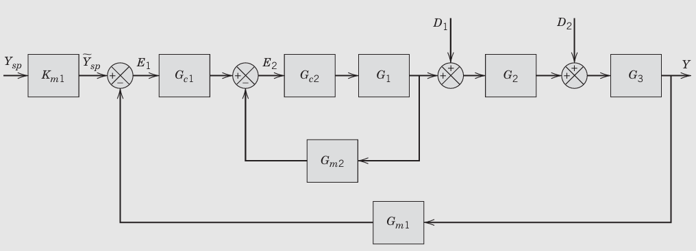 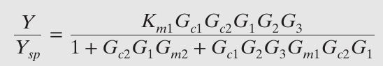
단순 제어 시스템의 폐쇄 루프 응답
외란 변수와 설정값 변화에 따른 몇 가지 기본 제어 문제의 동적 거동을 실제 예제로 고려해보자.
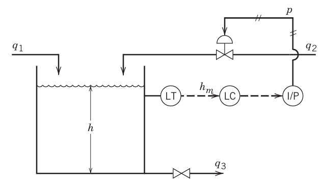 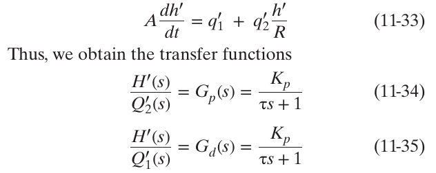
이것을 블록 다이어그램으로 그리면 아래와 같다.
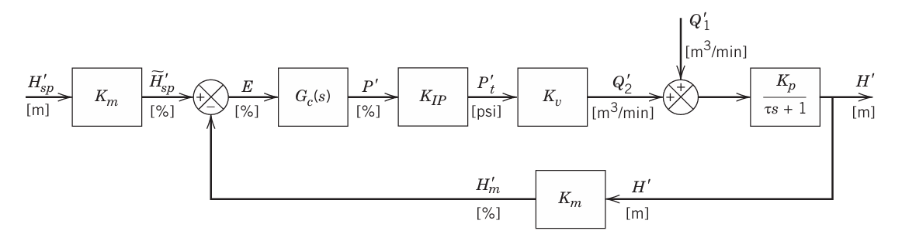
비례 제어 ( Gc(s)=Kc )및 설정점 변경
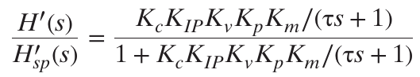
이 관계는 1차 전달 함수에 대한 표준 형태로 재배열될 수 있다.
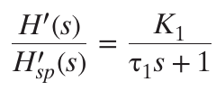
이때
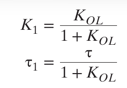
이제 여기에 계단응답을 줘보자.
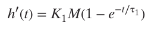 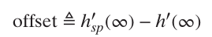 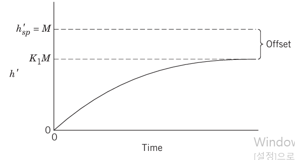
h′ sp(∞)=M. h′(∞)=K1M.
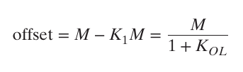
Proportional Control and Disturbance Changes
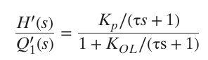
이렇게 되는데, 1차함수 꼴로 바꿀 수 있다.
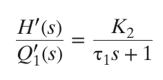
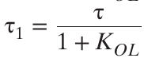 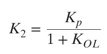
이제 안정성에 대해 논의해보자.
11.4 폐쇄 루프 제어 시스템의 안정성
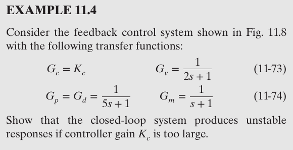
이 상황일때,
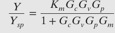
여기에서 설정점이 변함에 따라 식을 다 대입하면 다음과 같다.
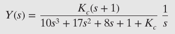
이제 이 식을 역변환하여 그래프를 살펴볼 수 있다.
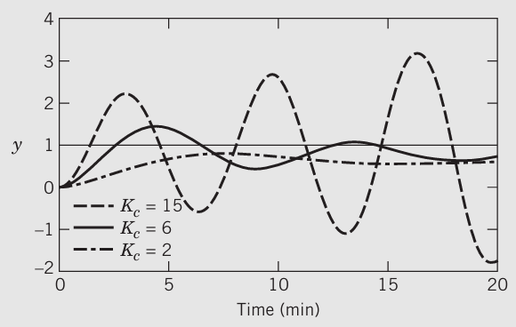
Kc가 매우 커지면 진동하는 것이 보인다. 그러면 어느정도 Kc에 도달했을 때 진동할 것인가? Kc, τI, τD 가 지정되었을 때 그 시스템이 안정한지 안한지 판단하는 방법을 알아보자.
안정성의 정의: 출력 응답이 모든 유계 입력에 대해 유계이면 안정
분석법 1): 전달함수의 분모를 특성방정식이라고 하며 이때 특성방정식의 근을 구한다. 그것을 복소평면에 찍어봤을 때, 좌반면에 존재할 경우 안정, 우반면에 존재할 경우 불안정하다. 허수 부분이 있으면 진동한다.
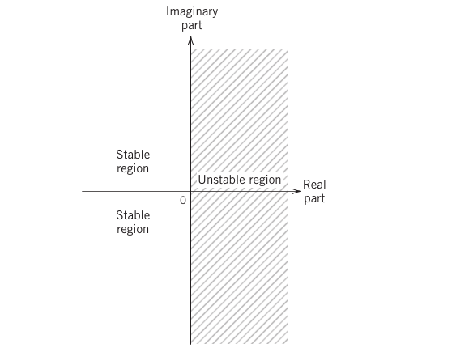 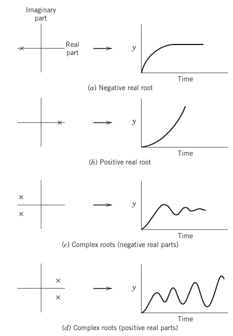
폐루프 시스템은 교란과 설정점 변화에 대해 같은 분모를 공유하므로, 교란에 대해 안정적이라면 설정값 변화에 대해서도 안정적이다.
근데 이건 특성방정식이 1차 2차인 경우에만 해당한다. 3차 이상의 경우는 루트로커스 방법을 쓴다.
분석법 2) 루트로커스
:모든 항이 양수일 때 사용가능하며 그렇지 않으면 불안정
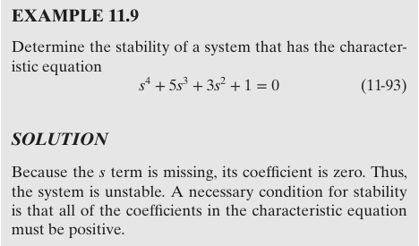
s항이 0이므로 불안정
분석법 3)직접 대입법
불안정과 안정의 경계가 되는 값에서 s=jω 가 되며 이를 특성방정식에 직접 대입한다. 그러면 실수부 =0 과 허수부 =0의 두 방정식이 나오며 이걸 통해 w값과 그때의 Kc값을 도출할 수 있다. 이를 임계 K라고 한다.
예를 들어 전체전달함수를 구하고 분모인 특성방정식 1+GoL을 구했는데 다음과 같았다고 쳐보자.
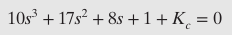
3차이므로 루트로커스를 쓸 수도 있지만 미지수가 있어 직접 대입법이 편하다. 이 경우에
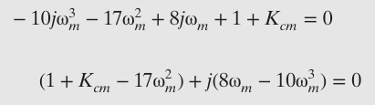 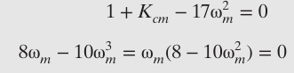 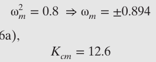
이렇게 된다. 이게 임계값이므로 K는 12.6을 넘으면 불안정해진다.